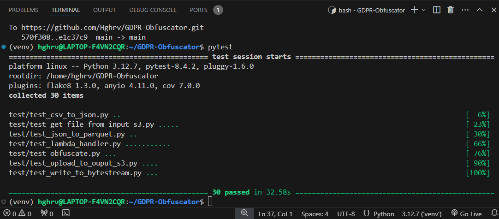

Welcome to this Full-Stack presentation!
Feel free to browse through projects via the blue links provided below. Enjoy this digital experience of problem solving and critical thinking.
Let's get started!
Part 1:
Go to Project 1 - Data Engineering
Go to Project 2 - Data Science
Go to Project 3 - Analytics and Visual Ouput
Part 2:
Go to Project 4 - Cloud Computing
Go to Project 5 - Unit Testing
Go to Project 6 - Cyber Security
Go to Project 7 - UK GDPR Obfuscator
Go to Project 8 - Refactoring Machine Learning processes
Deployment and presentation
The projects presented here are all interconnected. The task here is to build an automated data management system that will feed a Deep Learning Neural Network for predictions. Further illustrations will be presented along to provide further references.
You can visit the Git repository for this portfolio website via the following link: Visit the Git repository
Project 1 - Data Engineering: Building an ETL ingestion Pipeline
Description
In this section an automated ETL (Extract / Transform / Load) pipeline is being setup to handle data from a remote database. The pipeline output is an ingestion data lake connected a local data warehouse where processed data are stored in a STAR schema (relational databases) for further processing in the Data Science project that will follow.
Relational databases can created with PostgreSQL which can be intalled with the following command on Linux:
pip install psql
A virtual environment is then created for testing purposes to ensure that the software is robust and always working. For testing the library Pytest is being used while a MakeFile ensures automation during deployment.
A virtual environment can be created with the following commands:
pip install pyenv
python -m venv venv
Loading the virtual environment:
Project 2- Data Science: Building an optimised Neural Network for training and predictions from datasets
In this section a Neural Network is being added with optimised hyper-parameters using the Python API of Tensorflow. Tensorflow is a very popular tool used to build and deploy Neural Network. Hence for the purpose of this project, Tensorflow will be the computing framework for batch processing while compiling will be handled by importing the Keras library.
One great advantage of using Tensorflow is that one does not need to write code for the feedforward and back-propagation, but only to set the hyper-parameters such as density of spare weights matrix or the number of neurons and layers as well as the activation function for the last layer.
The chart below illustrates the multilinear neural network for one data point:
Cumulative input = wT*x + b = w1*x1 + w2*x2 + wk*xk + b
The chart below illustrates the batch processing matrix for a given batch size after feedforward and back-propagation for weights calibration:
Chart:
There are generally 6 main steps needed in order to implement a neural network model in Keras:
Step 1: Loading the data and creating timestamps
Project 3- Data Analytics: Visualising datasets models and assessing accurracy
In this section new data stored in the data warehouse are used to train the neural network continually and produce a visual chart for further monitoring of the data and the model's apparent behaviour.
In Keras, the imported Numpy and Matplotlib modules are working dynamically using the Tensorflow backend. A visual outut of the data may be implemented with Keras as follows:
# Visualising the dataset by index to check correct labelling
index = 1000
k = train_set_x[index,:]
k = k.reshape((28, 28))
plt.title('Label is {label}'.format(label= training_data[1][index]))
plt.imshow(k, cmap='gray')
# Visualising different test cases for assessment against validation data
index = 9997
k = test_set_x[index, :]
k = k.reshape((28, 28))
plt.title('Label is {label}'.format(label=(predictions[index], np.argmax(test_set_y, axis = 1)[index])))
plt.imshow(k, cmap='gray')
The model is eventually being assessed in this data lake to determine its current accuracy metrics for the training dataset and the test dataset:
Project 4 - Cloud Computing
Terraform scripts
Terraform comes across as being an ideal solution when it comes to automate the creation of ressources and deployment of code on cloud providers such as Amazon Web Services, Azure, or Google Cloud.
Terraform Hashicorp modules and documentation are available on their official webpage where an extensive and comprehensive guide is provided for developers (links below).
[Terraform Hashicorp documentation link]
Cloud Deployment on Amazon Web Services (AWS) can be automated in bash with the handling of the short and simple commands: "terraform init", "terraform plan", "terraform apply". This is a great advantage as all the digital infrastructures can be deployed automatically once all automated mock tests have been successful.
backend "s3" {
bucket = "gdpr-terraform-state-bucket" # Replace with your bucket name
key = "terraform/.terraform/terraform.tfstate" # Define the path for the state file
region = "eu-west-2" # Match your bucket's region
encrypt = true
}
For example, the Terraform script above allows the creation of a S3 bucket to hold the Terraform built-state (or Terrafor Plan) in a .tf file on the AWS Platform.
An initial IAM account is first created in the main.tf file that will later also includes intructions for the backend bucket once a terraform plan has been generated from the initial code (Then the Terraform plan are not saved locally but remotely on the AWS account).
Project 5 - Unit Testing and PEP8 Compliance
AWS Testing with Pytest and Moto
Let's illustrate unit-testing with Pytest and the use of Moto for the mocking of AWS storage containers in order to minimise costs, as tests sessions may sometimes be laborious during development and refactoring processes. For this convenient purpose, we are using Project 7 as an example to illustrate the testing processes for desired outcomes.

In the above example, we can note the following observations:
- A S3 bucket is mocked with a Pytest fixture in order to test the upload_to_output_s3.py module.
- The Pytest fixture is defined to yield a boto3.client() connection and create the mocked bucket which is then passed as an argument (mock_s3_bucket) of the test module.
- As noted previously, this method is also very convenient in order to run tests involving big data or labourious tests session that are likely to incur costs if run directly on an actual AWS S3 storage.
Here is below a screenshot from Project 7 (UK GDPR Obfuscator) showing unit-tests results for all the modules (including the Lambda handler itself testing the actual AWS infrastructure from input to output):

The 30 tests successfully passed in 32.58s, almost half than the 1 minute target of the Minimal Viable Product initially required.
Project 6 - Addressing CyberSecurity and Permissions
Coverage and Safety Testing
Local vs Dynamic Testing
Project 7 - GDPR Obfuscator for sensitive information
Building a Data Obfuscator under UK GDPR 2018 (General Data Protection Regulation, United Kindom)
The legal framework
Under UK domestic law, the General Data Protection Regulation or UK GDPR is a comprehensive data protection law that came into effect on 25 May 2018, alongside an revised version of the Data Protection Act 2018.
According to www.gov.uk/data-protection, data protection in the UK is mainly governed by the UK GDPR and the Data Protection Act of 2018. UK data protection principles specifically restricts how personal information is used by organizations in order to ensure data protection and privacy for individuals (data subjects).
These ‘data protection principles’ are strict rules requiring that people or entities responsible for using personal data must ensure (unless an exemption applies) the following legal requirements are met:
- Fair, lawful and transparent use of data
- Use of information for specific purposes
Project 8 - Refactoring Machine Learning processes with a visual output
Empirically proven methods for hyper-parameters optimisation and initialisation
Visualising Neural Networks with JavaScript librairies and Node.js